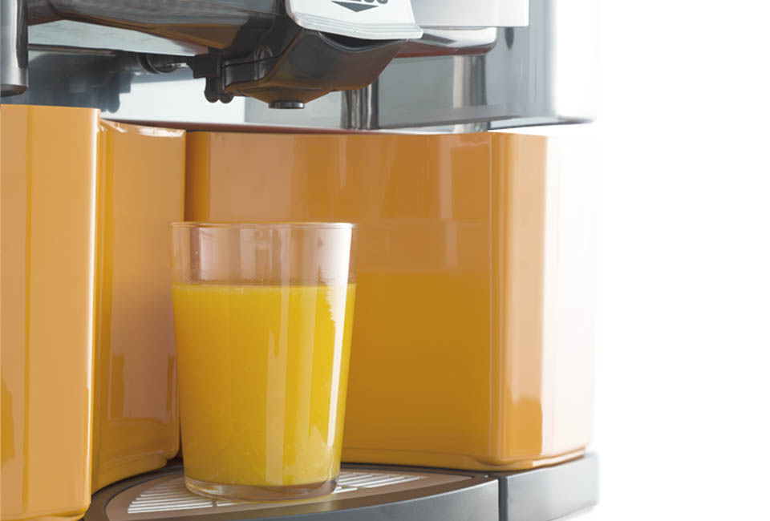
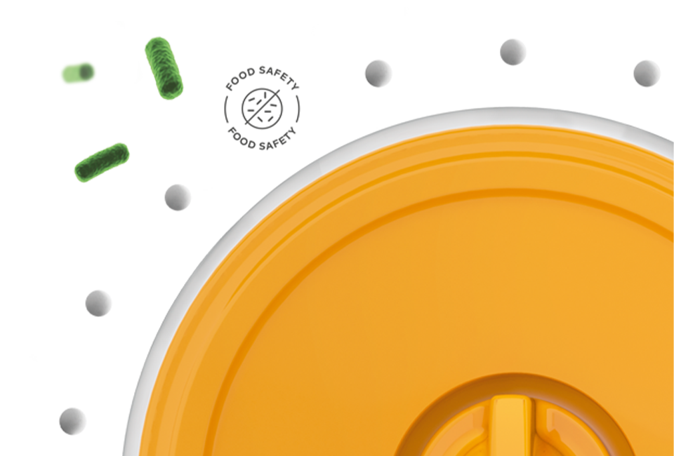
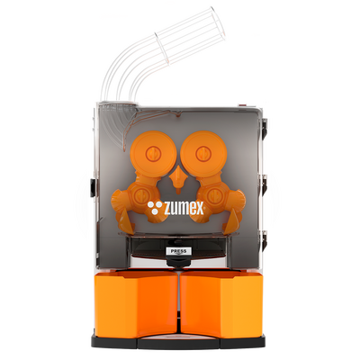
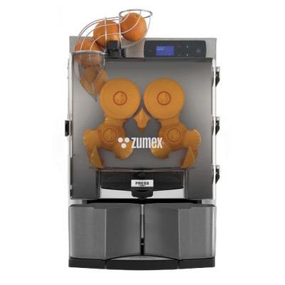
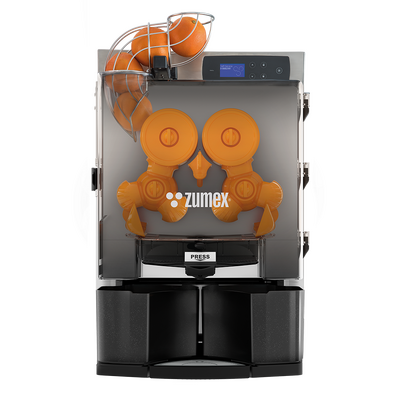

Citrusové odšťavňovače
Essential
Každodenní spolehlivost.
Řada pro restaurace, kavárny a bary s pravidelnou poptávkou po čerstvé šťávě. Essential Pro nabízí výkon 22 plodů za minutu; konkrétní výbava závisí na zvolené variantě.
Poptat tento produktCenu a dostupnost vám potvrdíme podle konfigurace.
22 plodů/minEssential Pro
4–5 plodůPodavač Pro
65–81 mmPrůměr ovoce Pro
Navržen pro váš provoz.
Essential je řada pro každodenní přípravu čerstvé citrusové šťávy v gastronomii. Essential Pro zpracuje 22 plodů za minutu a díky přímému plnění do sklenice, lahve či džbánu se přizpůsobí obsluze za barem i snídaňovému bufetu.
Pro nabízí samoobslužný a profesionální režim. Digitální displej slouží k nastavení počtu plodů a jazyka; kohoutek brání odkapávání. Řada zahrnuje Basic, Pro, Smart Pro a provedení s košem na ovoce — výbavu proto vybírejte podle konkrétní varianty.
Volba Basic, Pro nebo připojené varianty Smart.
Možnost sestavy s košem na ovoce.




CO ZPRACUJE
Suroviny pro Essential
Essential Pro je navržený pro dokonalé lisování malých a středních citrusů pomocí různých sad. Ideální pro:
- Pomeranče
- Mandarinky
- Citrony
- Limetky
- Standardní průměr
- 65–81 mm
- Kit S (volitelně)
- 45–67 mm
VYBERTE SI PROVEDENÍ
Jedna řada. Vaše konfigurace.


Essential Pro
Pro menší citrusy lze poptat výměnnou sadu. Instalaci na bar usnadní zvýšení stroje nebo sada pro průběžný odvod slupek. Parametry v tabulce patří provedení Pro.
Poptat variantu
Smart Essential Pro
Chytré provedení řady. Konektivitu a rozsah vzdálených funkcí potvrdíme pro vybranou konfiguraci.
Poptat variantuEssential Pro & Fruit basket
Pro menší citrusy lze poptat výměnnou sadu. Instalaci na bar usnadní zvýšení stroje nebo sada pro průběžný odvod slupek. Parametry v tabulce patří provedení Pro.
Poptat variantuFotografie jsou ilustrační pro danou řadu. Výbava a technické parametry se mohou lišit podle varianty.
KOLIK MÍSTA POTŘEBUJE
Rozměry
Essential Pro
- Výška750 mm
- Šířka470 mm
- Hloubka500 mm
- Hmotnost45,5 kg
Údaje výrobce. Přesné rozměry pro vaši konfiguraci rádi ověříme.
Výška
750 mm
750 mm
Šířka 470 mm
Barvy
4 barvy pro každý typ prostředí
- Silver
- Graphite
- Orange
- Black
Barevné odstíny na obrazovce jsou orientační. Vzorník vám rádi ukážeme.
PODROBNĚ A PŘEHLEDNĚ
Technické parametry.
- Parametry pro
- Essential Pro
- Výkon
- 22 plodů/min
- Podavač
- 4–5 plodů
- Standardní průměr ovoce
- 65–81 mm
- Rozměry (š × h × v)
- 470 × 500 × 750 mm
- Hmotnost
- 45,5 kg
- Režimy
- Self-Service / Professional
- Krytí
- IPX4
- Jazyky nastavení
- 23
- Lisovací systém
- Original System®
- Typ provozu
- Střední
- Výdej
- Samoobslužný kohoutek proti odkapávání s možností uzamčení
- Příkon
- 300 W (230 V) / 320 W (115 V)
- Napájení
- 220–240 V, 50–60 Hz / 115 V, 60 Hz
- Spotřeba proudu
- 2,7 A
- Bezpečnost
- Dvojitý bezpečnostní detektor a detekce zablokování motoru
- Kit S
- 45–67 mm (volitelně)
Údaje výrobce pro uvedené provedení. Výkon závisí na surovině a konfiguraci. Zdroj: Zumex ↗
Co zvážit při výběru
Pro menší citrusy lze poptat výměnnou sadu. Instalaci na bar usnadní zvýšení stroje nebo sada pro průběžný odvod slupek. Parametry v tabulce patří provedení Pro.
Probrat vhodnou konfiguraci ↗CO UVNITŘ DĚLÁ ROZDÍL
Technologie a výbava.
Original System®
Lisovací systém navržený pro maximální výtěžnost a kvalitu šťávy.
Antibakteriální nanotechnologie ASP
Ionty stříbra brání růstu bakterií, certifikovaná potravinová hygiena.
Dynamic Cutting System (DCS)
Volitelné příslušenství pro přesný řez ovoce.
VŠE PODSTATNÉ PO RUCE
Technické podklady.
Podrobnosti, dostupné příslušenství a materiály výrobce.